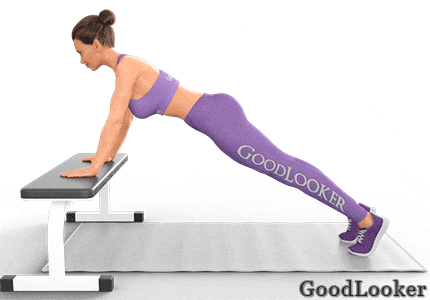
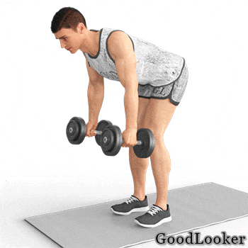
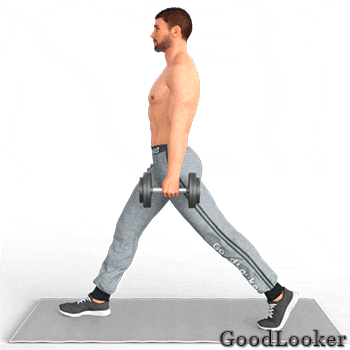
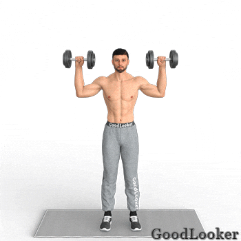
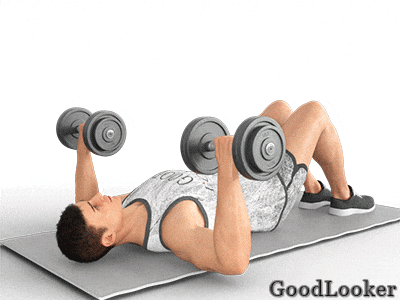
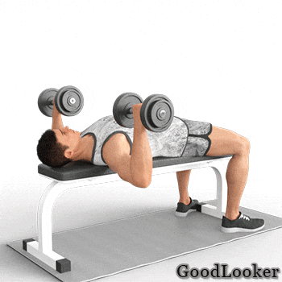
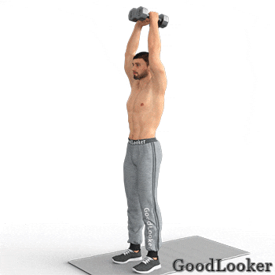
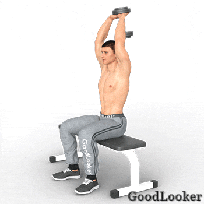
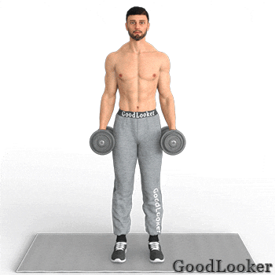

Круговой тренинг – высокоинтенсивные цикличные занятия, когда включаются все основные группы мышц в работу. Большие веса здесь не нужны, поэтому на начальных этапах этот стиль рекомендуют часто, в том числе для мужчин. Если вы тренируетесь в домашних условиях, то силовая тренировка «фулбоди» одно из лучших решений, так как хватит гантелей и коврика для полноценной программы.
1. Приседания с гантелями на плечах
Для чего: Акцентированная проработка квадрицепсов. Менее активно в работе участвуют ягодичные мышцы, разгибатели спины, бицепсы бедер. Создается в нижней половине тела мощный объем, улучшается мобильность суставов.
Как выполнять: Возьмите в ладони гантели, встаньте ровно и поставьте стопы чуть шире плеч. Носки не разворачивайте. Поднимите теперь руки, согнув в локтях, так, чтобы гантели оказались на плечах. Сделайте приседание, опустив бедра с тазом до параллели пола, затем вернитесь в стойку без резких движений. Колени не заваливайте, корпус сильно не наклоняйте.
Сколько выполнять: 10-15 повторений.

2. Отжимания (от пола или от скамьи)
Для чего: Прокачка верхних и нижних пучков грудных мышц, трицепсов. Этот вариант отжиманий нагружает также бицепсы, передние дельты, живот. Это упражнение для силовых тренировок мужчинам входит в число самых эффективных.
Как выполнять: Разместитесь в планке на прямых руках. Корпус ровный, ноги близко друг к другу. Ладони поставьте узко, слегка по бокам от плеч. Теперь по классической технике выполните отжимание. Опустите корпус как можно ниже без провисания таза, спины. Локти не уводите слишком далеко по сторонам, они должны смотреть назад
Сколько выполнять: 10-12 повторений.

Можно выполнять упражнения от скамьи, если пока вам тяжело даются отжимания от пола:

3. Тяга гантелей в наклоне
Для чего: Повышение объема и ширины всего мышечного массива спины. При выполнении упражнения акценты идут на широчайшие, ромбовидные, большие круглые мышцы, поясничные разгибатели и трицепсы с задней дельтой. Входит тяга в число самых полезных движений для мужчин, так как развивает толщину спины, придает мускулистый вид, улучшает осанку и пропорциональность.
Как выполнять: Поставьте стопы на ширину плеч, возьмите гантели в руки, из стойки теперь наклоните корпус вперед, слегка согнув колени и оставив опору на пятках. Снаряды опустите свободно вниз, ладони внутрь. Дотяните гантели к поясу (руки вдоль тела) и сведите лопатки, верните назад. Корпус статичен.
Сколько выполнять: 10-15 повторений.

4. Выпады на месте
Для чего: Увеличение мышечного объема в нижней части тела. Упражнение по прокачке ног формирует правильную форму бедра, нагружает большие и малые ягодичные мышцы с четырьмя пучками квадрицепсов и бицепсами. Развитие на максимум получают стабилизаторы, улучшается баланс с координацией.
Как выполнять: Примите сначала исходную позу для выпада – оставьте левую ногу на месте, а правой ногой шагните назад, установив на носок. Обе гантели в руках, спина ровная. Согните ноги, опустите таз и доведите бедро до параллели пола, встаньте с давлением в пятку. Колено над стопой. Выполните целый подход и поменяйте ноги.
Сколько выполнять: 10-12 повторений на каждую ногу.

5. Жим гантелей стоя
Для чего: Развитие силы и объемности мускулатуры плечевого пояса, создание шарообразной формы плеч. Нагрузка на средние и передние пучки дельт, также работают трицепсы, бицепсы. Косвенно задействуются ноги, пресс, спина. Жим нужно включать в силовые тренировки для мужчин на регулярной основе.
Как выполнять: Расположитесь в обычной стойке, стопы поставьте на ширину плеч, держитесь прямо. Поднимите гантели над головой. Согнув локти и доведя их чуть ниже плеч, опустите руки через стороны. Выжмите обратно вверх.
Сколько выполнять: 10-15 повторений.

6. Жим от груди лежа
Для чего: Базовое упражнение для повышения силы и массы мышц груди. Этот жим включает в работу также передние дельты, трицепсы. Задействуется много стабилизаторов из плеч, рук, спины, живота. Очерчивается рельеф, мускулатура прорабатывается более симметрично, если берутся гантели, а не штанга.
Как выполнять: Прилягте на пол спиной вниз, возьмите снаряды в кисти, руки выпрямите над собой, расположите близко друг к другу. Согните колени, а ноги слегка притяните к тазу и поставьте стопы. Опустите руки через сторону, локти доведите до пола, выжмите вверх.
Сколько выполнять: 10-15 повторений.

Если у вас есть скамья, фитбол или удобные табуретки, которые можно соединить, лучше делать на скамье, так будет больше амплитуда и выше эффективность.

7. Планка-паук на локтях
Для чего: Динамическая нагрузка на мышцы всего тела. Интенсивно работает в упражнении пресс, задействуются также плечи, руки, ягодицы, ноги, спина. Эта разновидность планки повышает выносливость мускулатуры, восстанавливает в суставах подвижность, укрепляет кор и исправляет положение позвоночника.
Как выполнять: Опуститесь в планку на локтях, подберите таз и живот, а ноги держите рядом друг с другом, не прогибайтесь в спине. Через сторону потяните правое колено к одноименному локтю, положение тела не меняйте. Опустите ее обратно. Затем повторите левой ногой. Больших пауз не делайте.
Сколько выполнять: 10-12 повторений на каждую сторону.

8. Скручивания к согнутым ногам
Для чего: Интенсивная проработка мускулатуры пресса. Верхнюю часть пресса нагружается за счет скручиваний, а низ живота – за счет согнутых ног. Упражнение укрепляет кор, повышает силу и выносливость мышц, формирует рельеф.
Как выполнять: Перевернитесь на спину, подогните колени и поднимите ноги вверх, доведя бедра до вертикали, а поясницу плотно прижмите. Вытяните руки над головой. Выполните скручивание – приподнимите верх корпуса и ладонями коснитесь боковых частей голеней, опуститесь. Руки ведите через стороны.
Сколько выполнять: 12-15 повторений.

9. Французский жим гантелей стоя
Для чего: Усиление и укрепление трехглавых мышц рук. Задействуются в этом упражнении все три головки: латеральная, медиальная, длинная. Включается по мере разгибания и локтевая мышца. Отлично подходит для силовой тренировки новичков, так как жимовое движение безопасно для суставов со связками.
Как выполнять: Ровно встаньте, обе гантели возьмите в руки и поднимите над головой. Локти прямые, максимально близко к голове. Не разводя их в стороны от фиксированной точки и сохраняя позиции плечевых костей, опустите назад и вниз утяжеления. Выпрямите локти обратно. Спину держите ровной.
Сколько выполнять: 10-15 повторений.

Можно делать такой вариант, если у вас большой вес гантели:

10. Сгибания на бицепс двух видов
Для чего: Равномерная прокачка обеих головок бицепса. Акцент на их верхний отдел, что придает двуглавой мышце более пиковую форму. Косвенно сгибания задействуют также мускулатуру предплечья, особенно плечелучевой пучок.
Как выполнять: Сначала возьмите утяжеления, затем разместитесь в обычную стойку. Стопы на ширине плеч, спина прямая, руки вдоль туловища. Сделайте 2 вида сгибаний: с разворотом ладоней к рукам, с сохранением положения кистей (молотки). Чередуйте подъемы. Корпусом не помогайте поднимать гантели.
Сколько выполнять: 10-15 повторений.
